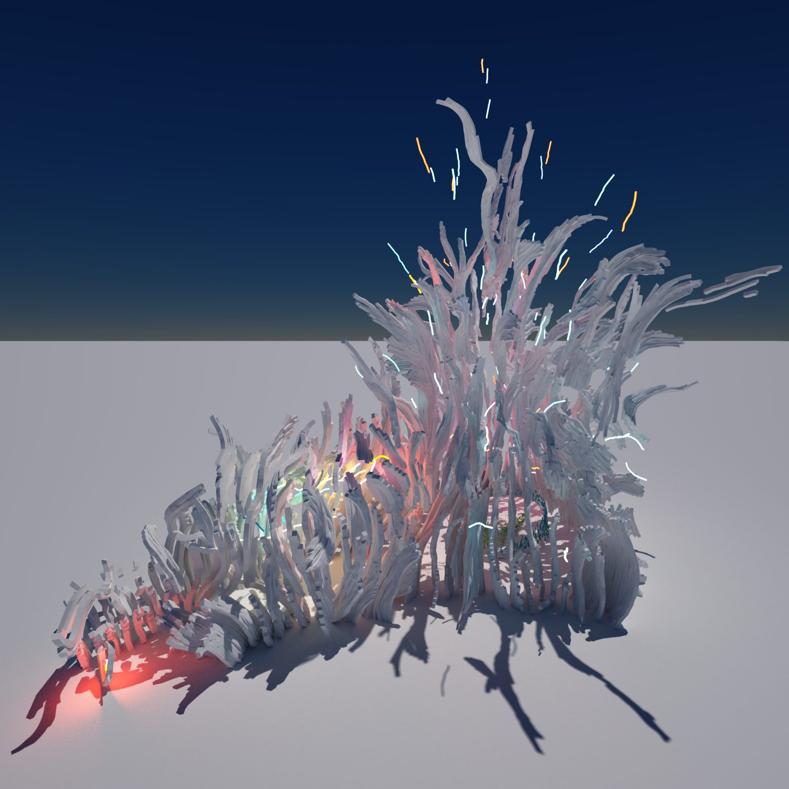
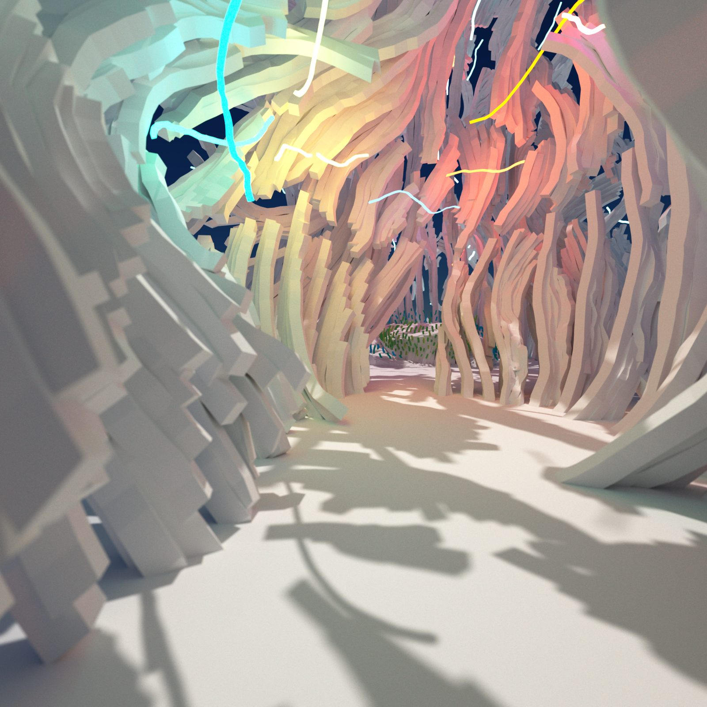
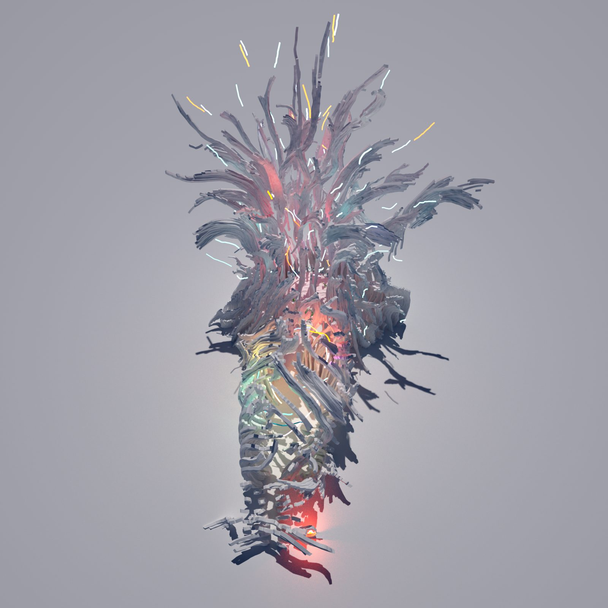
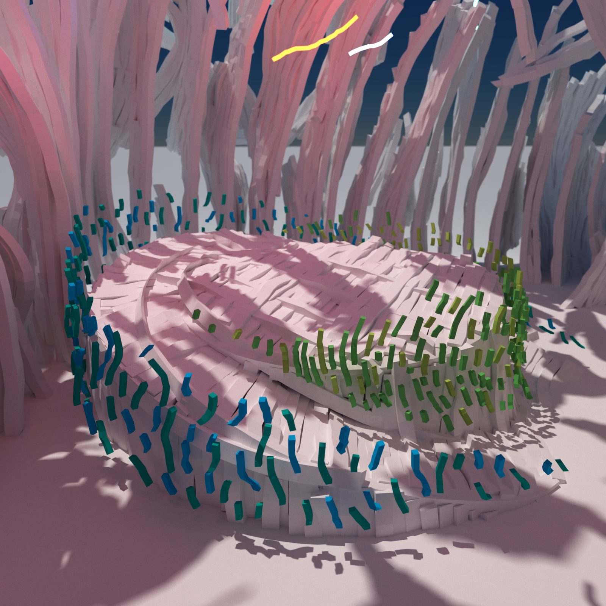
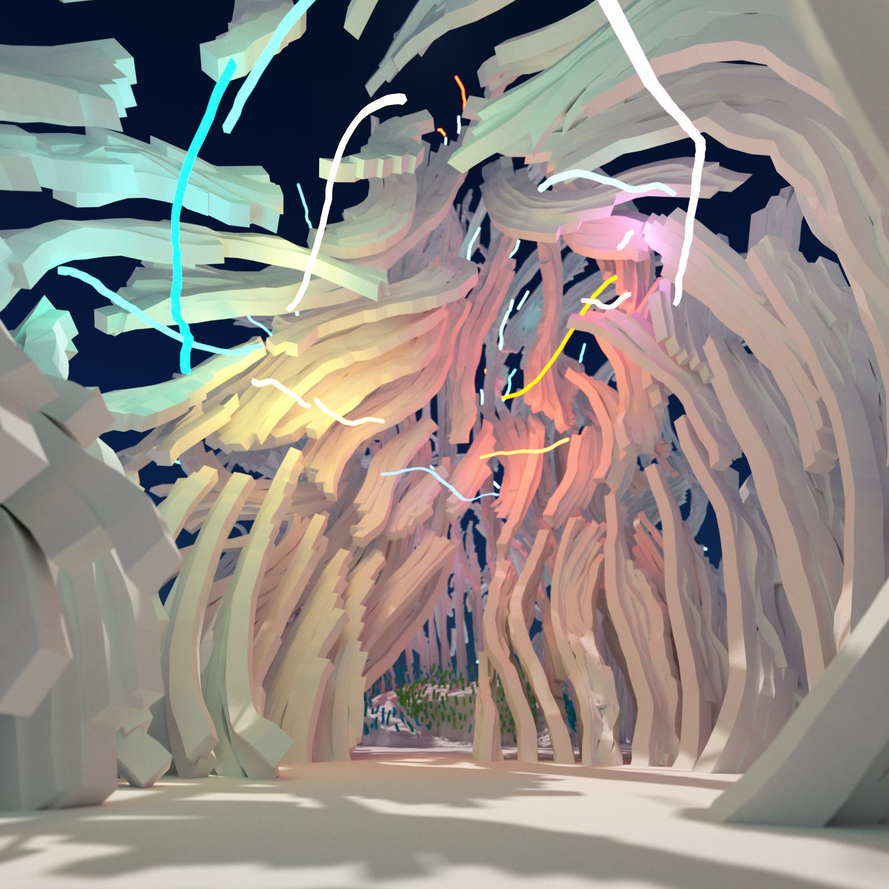

A reflection on the potential shapes of spiritual architecture. Freed from gravity, the walls explode gloriously toward the sky, lit from within by a cacophony of colour.
Une réflexion sur les formes possibles de l’architecture spirituelle. Libérés de la gravité, les murs explosent glorieusement vers le ciel, éclairés de l’intérieur par une cacophonie de couleurs.
The VR Church began with a virtual reality meeting with Jeremy Nickel, a minister of the Unitarian Universalism Fellowship who conducts guided meditation sessions in VR. Rather than recreating the familiar forms of physical churches, the project asked a more fundamental question: what could spiritual architecture become when freed from gravity, material cost, and structural limitation?
La VR Church est née d’une rencontre en réalité virtuelle avec Jeremy Nickel, un pasteur de la Unitarian Universalism Fellowship qui anime des séances de méditation guidée en VR. Plutôt que de recréer les formes familières des églises physiques, le projet posait une question plus fondamentale : que pourrait devenir l’architecture spirituelle une fois libérée de la gravité, du coût des matériaux et des contraintes structurelles ?
Unitarian Universalism is a denomination that celebrates all religions, a universal spiritual space open to atheists, agnostics, and theists alike. This conceptual openness demanded an architecture equally unbounded. The result is a structure whose undulating walls surge skyward like flames or an explosion, blowing past the physical limitations that Gothic cathedrals could only mock with their soaring pinnacles.
L’unitarisme universaliste est une confession qui célèbre toutes les religions, un espace spirituel universel ouvert autant aux athées qu’aux agnostiques et aux croyants. Cette ouverture conceptuelle appelait une architecture tout aussi affranchie. Il en résulte une structure dont les murs ondoyants s’élancent vers le ciel telles des flammes ou une explosion, dépassant les limites physiques que les cathédrales gothiques ne pouvaient qu’imiter avec leurs pinacles élancés.

Unlike traditional sacred architecture, which transforms light from the outside through stained glass, the VR Church inverts this relationship entirely. The structure is lit from inside, its undulating walls radiating colour outward. Inside the cave-like interior, different colours emanate from the walls, creating a cacophony of merging hues.
Contrairement à l’architecture sacrée traditionnelle, qui transforme la lumière venue de l’extérieur à travers les vitraux, la VR Church inverse entièrement cette relation. La structure est éclairée de l’intérieur, ses murs ondoyants irradiant la couleur vers le dehors. Dans l’intérieur caverneux, différentes couleurs émanent des murs et composent une cacophonie de teintes qui se fondent les unes dans les autres.
The facade is pierced throughout, providing the shell of a shelter while maintaining shifting visual connections between inside and outside. Light bleeds through the gaps, casting complex shadows that shift as the viewer moves through the space.
La façade est ajourée de part en part, offrant la coquille d’un abri tout en conservant des liens visuels changeants entre le dedans et le dehors. La lumière filtre par les interstices et projette des ombres complexes qui se déplacent à mesure que le visiteur traverse l’espace.

Architecture appears for the first time when the sunlight hits a wall.
L’architecture apparaît pour la première fois lorsque la lumière du soleil frappe un mur.


The VR Church was modelled in VR using Google Blocks, one of Samuel’s earliest experiments with hand-sculpting architecture directly in virtual space. The project has not been released as a VR experience due to the complexity of completing the lighting process, but it stands as an important conceptual milestone: the first time the question of what virtual architecture should be, rather than what it could simulate, became the driving force of the design.
La VR Church a été modélisée en VR avec Google Blocks, l’une des premières expériences de Samuel où l’architecture était sculptée à la main directement dans l’espace virtuel. Le projet n’a pas été diffusé comme expérience VR en raison de la complexité du processus d’éclairage à mener à terme, mais il demeure un jalon conceptuel important : la première fois où la question de ce que l’architecture virtuelle devrait être, plutôt que ce qu’elle pourrait simuler, est devenue le moteur de la conception.
The project also marks the beginning of a trajectory that would lead from speculative spiritual architecture to the contemplative spaces of the Light Gallery and eventually to Gloam. That virtual architecture should exploit the freedoms of its medium rather than imitate physical constraints. This conviction runs through every project that followed.
Le projet marque aussi le début d’une trajectoire qui mènera de l’architecture spirituelle spéculative aux espaces contemplatifs de la Light Gallery, puis à Gloam. L’idée que l’architecture virtuelle devrait exploiter les libertés de son médium plutôt que d’imiter les contraintes physiques. Cette conviction traverse chacun des projets qui ont suivi.
